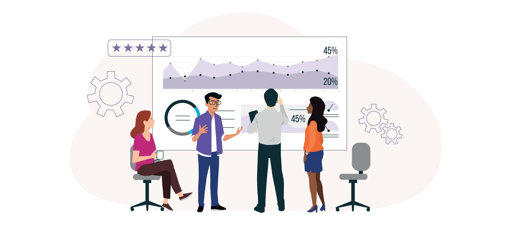

AkPlise
Kaliteli Üretim
Yüksek teknoloji makineler ve kaliteli malzemeler kullanarak, dayanıklı ve estetik ürünler üretiyoruz.
Siz de plise sineklik ve plise perde ihtiyaçlarınızda kaliteli, güvenilir ve müşteri odaklı bir hizmet almak için bizi tercih edin. Evinize konfor ve şıklık katmak bizim işimiz!
Hadi Başlayalım Online KatalogŞirketimiz, kaliteli plise sineklik ve plise perde malzemeleri üretimi konusunda uzmanlaşmıştır ve ürünlerimizi dünya çapında 30'un üzerinde ülkeye ihraç ediyoruz. Avrupa, Asya, Afrika ve Güney Amerika gibi farklı kıtalarda yer alan müşterilerimize, yüksek kalite standartlarına uygun ürünlerimizi ulaştırıyoruz.
Devamını OkuTüm ürünlerimiz, uluslararası kalite standartlarına uygun olarak üretilmektedir. Ürünlerimizin dayanıklılığı ve estetiği, müşterilerimiz tarafından sürekli olarak takdir edilmektedir.
Müşteri memnuniyeti bizim için en önemli önceliktir. Profesyonel ekibimiz, her aşamada sizlere destek sunmak için hazırdır.
Ürünlerimizi hızlı ve güvenli bir şekilde müşterilerimize ulaştırmak için güvenilir lojistik ağlarıyla çalışıyoruz. Siparişleriniz en kısa sürede ve sorunsuz bir şekilde teslim edilir.
Her ihtiyaca uygun geniş ürün yelpazemizle, dünya genelindeki müşterilerimizin beklentilerini karşılıyoruz.
5000 m² büyüklüğündeki üretim alanımız, geniş kapasiteli üretim hatları ve modern ekipmanlarla donatılmıştır. Bu sayede yüksek miktarlarda üretim yapabilmekte ve müşterilerimizin taleplerine hızlı bir şekilde yanıt verebilmekteyiz.
Üretim süreçlerimizde en yeni ve en ileri teknolojileri kullanıyoruz. Plastik enjeksiyon makineleri, katlama makineleri ve plastik extruder makineleri ile yüksek hassasiyet ve kalite standartlarına uygun üretim yapıyoruz.
Alanında uzman mühendisler ve deneyimli çalışanlardan oluşan ekibimiz, üretim süreçlerini titizlikle yönetir. Her aşamada kalite kontrolü yaparak, ürünlerimizin yüksek standartlara uygun olmasını sağlıyoruz.
Üretim tesisimizde çevre dostu uygulamalara büyük önem veriyoruz. Enerji verimliliği sağlayan sistemler kullanarak, çevresel etkilerimizi en aza indiriyoruz.
Çalışanlarımızın güvenliği ve sağlığı bizim için en öncelikli konulardandır. Üretim alanımızda en yüksek güvenlik standartlarına uygun olarak çalışıyor ve iş sağlığı kurallarına titizlikle uyuyoruz.
İstanbul Tuzla'daki üretim alanımız, yüksek üretim kapasitesi ile müşterilerimizin tüm taleplerine hızlı ve etkili çözümler sunar. Plise sineklik ve plise perde malzemelerinde geniş ürün yelpazemizle, her türlü ihtiyaca yönelik üretim yapabiliyoruz.

Plastik enjeksiyon makinelerimizle yüksek hassasiyetli plastik parçalar üretiyoruz. Bu makineler, dayanıklı ve kaliteli plastik bileşenler sağlamak için en son teknolojiyi kullanır.
Düz tülleri katlama makinelerimizle plise tül haline getiriyoruz. Bu süreç, tüllerin estetik ve fonksiyonel olarak mükemmel bir şekilde hazırlanmasını sağlar.
Plastik extruder makinelerimizle PVC şerit profilleri üretiyoruz. Bu makineler, yüksek dayanıklılığa sahip PVC profillerin üretilmesini sağlar.
Üretmediğimiz ürünlerimizi ise Türkiye'nin en iyi şirketlerinden tedarik ediyoruz. Bu sayede, müşterilerimize her zaman en yüksek kalitede ürünler sunabiliyoruz.

Kalite, yenilik ve müşteri memnuniyeti odaklı hizmet anlayışımızla, İstanbul Tuzla'da bulunan 5000 m² tam profesyonel üretim alanımızda faaliyet gösteriyoruz. Modern üretim tesisimiz, en yeni teknolojilerle donatılmış olup, plise sineklik ve plise perde malzemelerinin üretiminde sektörde lider konumda bulunmamızı sağlamaktadır.
AkPlise
Yüksek teknoloji makineler ve kaliteli malzemeler kullanarak, dayanıklı ve estetik ürünler üretiyoruz.
AkPlise
Üretmediğimiz ürünleri, Türkiye'nin önde gelen tedarikçilerinden temin ederek kalite standardımızı koruyoruz.

AkPlise
Sürekli yenilenen üretim tekniklerimiz ve inovatif yaklaşımımızla, müşterilerimize en iyi çözümleri sunuyoruz.

AkPlise
Plise sineklik ve perde malzemelerimiz, üstün kalite ve ergonomik tasarım özellikleriyle öne çıkıyor.
Modern yaşam alanları için estetik ve fonksiyonelliği bir arada sunan plise sineklik ve plise perde malzemelerimiz, üstün kalite ve ergonomik tasarım özellikleriyle öne çıkıyor. Hem evlerde hem de iş yerlerinde konfor ve şıklığı bir arada sunan ürünlerimizle, yaşam alanlarınızı daha iyi bir hale getiriyoruz.


Plise sineklik, katlanabilir yapısı sayesinde kullanılmadığında kolayca kapatılabilen ve açıldığında ise sinek ve diğer haşerelerin içeri girmesini engelleyen bir sineklik türüdür. Kullanımı son derece kolaydır ve pencere veya kapı çerçevelerine monte edilir.
Plise perdeler, katlanarak açılıp kapanabilen ve modern, şık bir görünüm sunan perde çeşitleridir. Işık kontrolü ve mahremiyet sağlama konusunda etkili çözümler sunar.
Ürünlerimizi doğrudan web sitemiz üzerinden sipariş verebilir veya satış noktalarımızdan temin edebilirsiniz. Detaylı bilgi için bizimle iletişime geçebilirsiniz.
Hayır, plise sineklik ve plise perdelerin montajı oldukça kolaydır. Ürünlerimizle birlikte gelen montaj kılavuzlarını takip ederek kolayca monte edebilirsiniz. Ayrıca, montaj konusunda yardıma ihtiyacınız olursa, destek ekibimizle iletişime geçebilirsiniz.
Plise Perdeler:
Kumaş Renkleri: 40 farklı kumaş rengi seçeneğimiz bulunmaktadır.
Aksesuar Renkleri: Kahve, siyah, gri ve beyaz olmak üzere 4 çeşit aksesuar rengimiz mevcuttur.
Profil Renkleri: Gri, krem, beyaz, antrasit gri, kahve ve eloksal olmak üzere 6 renk profil seçeneğimiz
bulunmaktadır.
Plise Sineklikler:
Alüminyum Profil Renkleri: Beyaz, açık kahve, koyu kahve, düz maun, altınmeşe, fındık, maun, eloksal, bronz
eloksal, vizon ve antrasit gri olmak üzere 11 farklı renk seçeneğimiz bulunmaktadır.
Evet, tüm ürünlerimiz belirli bir garanti süresiyle birlikte sunulmaktadır. Garanti kapsamı ve şartları hakkında detaylı bilgi için ürünle birlikte gelen garanti belgesini inceleyebilir veya bizimle iletişime geçebilirsiniz.
Evet, ürünlerimizi dünya çapında 30'un üzerinde ülkeye ihraç ediyoruz. Avrupa, Asya, Afrika ve Güney Amerika gibi çeşitli bölgelerdeki müşterilerimize hizmet veriyoruz.
Üretim tesisimiz İstanbul Tuzla'da, 5000 m² büyüklüğündeki modern üretim alanımızda bulunmaktadır. Burada en yeni teknolojilerle donatılmış ekipmanlarımızla üretim yapıyoruz.
Evet, ürünlerimizde kullanılan tüm malzemeler yüksek kalite standartlarına uygun ve güvenlidir. Ürünlerimiz, uzun ömürlü kullanım ve müşteri memnuniyeti sağlamak amacıyla titizlikle üretilmektedir.
Siparişlerinizi en kısa sürede hazırlayıp kargoya veriyoruz. Teslimat süresi, bulunduğunuz bölgeye ve seçtiğiniz kargo hizmetine bağlı olarak değişebilir. Detaylı bilgi için sipariş onay e-postanızdaki bilgileri kontrol edebilirsiniz.

Bizimle iletişime geçmek çok kolay! Sorularınız, geri bildirimleriniz veya destek talepleriniz için aşağıdaki formu doldurabilir veya doğrudan iletişim bilgilerimizi kullanarak bize ulaşabilirsiniz. Size yardımcı olmak için buradayız ve en kısa sürede geri dönüş yapacağız.
Ahmetyesevi mah sema sok no: 40 Sultanbeyli /İstanbul
+90 545 542 91 18
info@sineklikmalzemesi.com